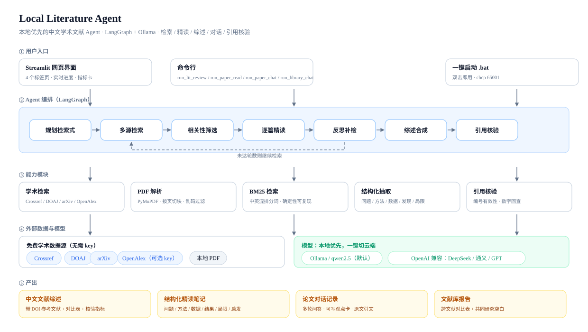
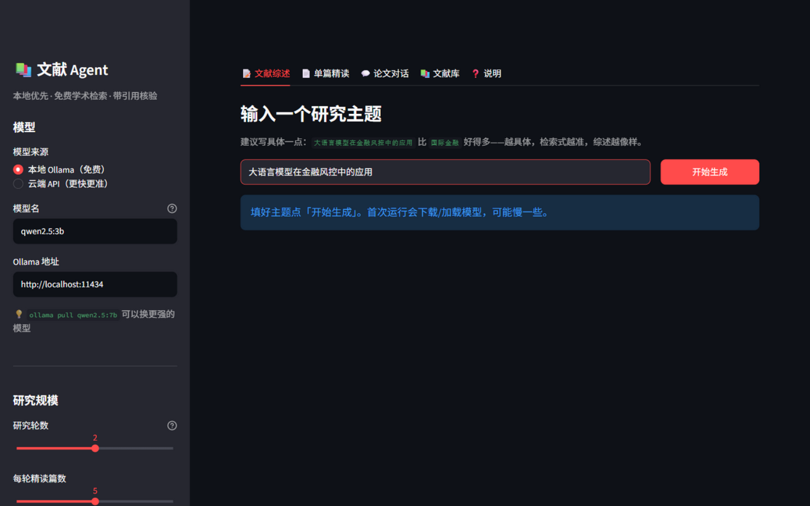
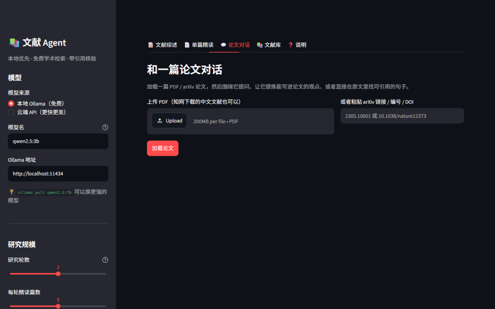
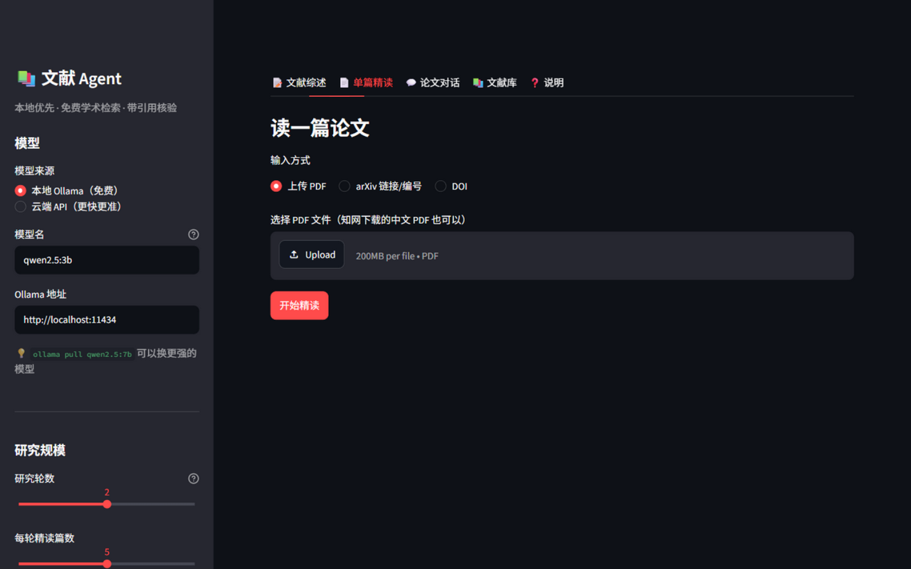
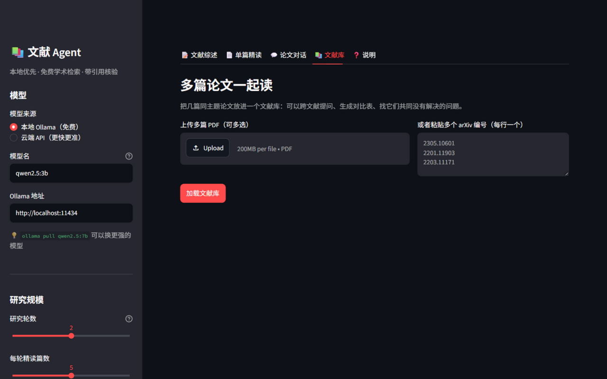

一个跑在笔记本上的中文学术文献 Agent：检索 Crossref / DOAJ / arXiv， 逐篇结构化精读，生成带 DOI 参考文献的中文综述， 并用确定性检查告诉你哪些引用和数字需要人工核对。 支持围绕论文连续提问、跨文献对比、提炼可写进论文的观点。
"读文献"其实是 5 个任务，市面产品大多只解决 1 个。
通用 AI 搜索返回新闻、百科、SEO 垃圾；搜"国际金融"甚至会返回词典页。
一个方向几百篇论文，粗读一遍要几天；读完也记不住谁用什么方法。
单篇问答产品很成熟，但"这几篇的结论分歧在哪"没有工具支持。
综述需要观点 + 出处 + 对比；让模型写往往变成泛泛而谈。
模型会编造引用和数字，没有工具告诉你哪句需要回原文核对。
② 已经不是问题，"找 + 比 + 写 + 核"才是。
统一跑在本地 Ollama 上（免费、数据不出本机），界面里可一键切换 DeepSeek / OpenAI / 通义。

输入一个主题，输出中文综述初稿、对比表、带 DOI 的参考文献和核验指标。
PDF / arXiv / DOI → 结构化中文笔记（问题/方法/数据/结果/局限/启发）。
围绕一篇论文连续提问；一键提炼"可写进论文的观点"，原文依据由程序回填。
多篇论文跨文献问答、生成对比表、找它们共同没有解决的问题。




这些决定了产品能不能用、指标能不能信、结论能不能被证伪。
第一版沿用网页搜索，搜"国际金融"返回词典页——不是模型不行，是数据源不对。换成学术库后， 同样的问题才第一次出现真正的期刊论文。
模型会把主题词丢掉（"大语言模型在金融风控" → 只搜 financial risk）。三层兜底： 提示词要求 + 代码补全 + 打分惩罚，完全不提核心概念的论文直接淘汰。
让 3B 模型判断"引用是否有依据"，同一稿跑两次从 33.3% 变成 27.3%。 最终主指标换成确定性检查：编号有效性、数字回查、引用覆盖；语义抽检降级为参考。
一篇论文只有几十个片段，BM25 足够且结果可复现、可核对页码；中文提问先转英文关键词再检索。
小模型会"假装引用"——让它照抄原文，它会把提示词占位文字填回来。 改成：模型只输出句子编号（[p3-s2]），程序回填真实原句。
原来所有结论都是自说自话（"换了学术源效果更好"）。补了 10 主题对照实验： B0 直接检索 6%、B1 加检索式 57.5%、B2 硬约束 64.5%、B3 软惩罚 62.0%。 也发现了反例——3 个主题上约束反而变差，归因是同义词被硬约束误杀。
v2 上线后指标测不出它的好处，因为 on-topic 判定和硬约束用的是同一套关键词—— 被"误杀"的同义表达按定义就算 off-topic，指标根本看不见。这是评测在测自己。
qwen2.5:3b，纯 CPU，16GB 内存笔记本；指标由程序自动产出，可逐条核对。
| 条件 | Precision@10（核心概念 + 领域同时命中） | 说明 |
|---|---|---|
| B0 naive | 6.0% | 直接用中文主题检索，不规划、不约束 |
| B1 检索式 | 57.5% | 模型生成英文学术检索式 + 多源检索 + 去重打分 |
| B2 hard（v1） | 64.5% | B1 + 核心概念/领域硬淘汰 |
| B3 soft（v2） | 62.0% | B1 + 同义词扩展 + 软惩罚（当前默认） |
诚实解读：B0→B1 是稳健的数量级提升；B1→B2→B3 都在噪声里（重复运行波动 ±11~14pp）， v2 的 62.0% 并不比 v1 的 64.5% 好。更关键的是——on-topic 判定和硬约束用的是同一套关键词， 指标天然偏向硬约束，看不见"同义表达被误杀"（构念效度问题）。 所以 v2 上线不是为了"更准"，而是消除结构性风险。 2026-11 用 201 篇人工盲标重新评估：宽口径 B1/B3 打平（84% = 84%，p=1.00）， 严口径 +11pp 但不显著（p=0.125，10 主题 MDE≈16pp）；碳中和单主题 10% vs 90% 暴露护栏需求。 人工金标准 · 统计与实验设计 · 评测总览。
线上 B3 人工宽口径 P@10（主题级 CI 66–97）
规则 vs 人工；精确率 98.6% 但召回 45.1%——不是不准，是太窄
碳中和单主题：规则口径 35% 看着还行，人工只有 10%
宽口径 B1/B3 打平（84% = 84%，p=1.00）；严口径 +11pp 但不显著（p=0.125）——不宣称 B3 更准。 保留 soft 的理由是避免硬约束误杀，不是精度更高。护栏（单主题 <50% 回退）目前只是假设： 模拟显示均值 84%→91%，但芯片主题 70%→60%，阈值尚未在 holdout 验证。 完整数据：HUMAN_EVAL.md · AB_EXPERIMENT.md。
| 模型 | 平均耗时/篇 | 有效字段率 | 结论 |
|---|---|---|---|
| qwen2.5:3b | 12.6s | 80% | 简单论文够用；ToT 这类只抽出 2/5 字段 |
| qwen2.5:7b | 35.7s | 100% | 难题也能抽全，代价是 2.8× 时间 |
这组数据支撑了"本地/云端一键切换"的设计：默认 3B（快、免费），质量敏感时换 7B 或云端。 原始抽取 JSON 附在 模型对比报告，可逐条核对； 检索 A/B 的完整分析见 评测报告。
| 指标 | 结果 | 说明 |
|---|---|---|
| 一次综述耗时 | 约 6 分钟 | 2 轮 × 4 篇，精读 8 篇 |
| 引用编号有效性 | 23/23 | 结构下限（参考文献由程序生成，100% 是应有结果） |
| 参考文献完整率 | 8/8 | 全部带 DOI 或 arXiv 链接 |
| 数字可追溯率 | 100%（仅 2 个数字） | 质量信号，但样本过小，不宣称准确率 |
| 引用语义支撑率 | 33.3% / 27.3% | 同稿两次不一致 → 已降级为可选参考 |
| 已知 badcase | 74% 被写成 87.8% | 3B 数字幻觉，已写入反幻觉提示词，仍需人工核对 |
都是本地跑的原始结果，可直接点开核对。
刻意保持轻量：本地能跑、依赖少、每个环节可替换。
已完成 9 项；下一步补双人标注 κ 与更大主题集。
多源检索 · 相关性约束（v1 硬淘汰 → v2 软惩罚）· 结构化精读 · 中文综述 · 确定性引用核验 · 网页界面 + 云端切换 · 论文对话 · 文献库对话 · 10 主题 A/B 评测 · 3B vs 7B 模型对比 · 用户测试套件
双人标注 30 篇算人类-人类 κ · 5 人可用性测试（套件已就绪）· 引文滚雪球
定位是「综述初稿 + 线索发现」，不是替写论文；中文库走本地 PDF 的合规路径，不做爬虫。